M O O M O O • S I N C E 1 9 6 6
A2 목초우유 유가공 레시피북
Butter · Cream · Cheese Complete Recipe Book
무무목장 Jersey A2A2 원유 기반 전 품목 제조 매뉴얼
원유 기준 · Jersey A2A2 · 유지방 5.2% · 유단백 3.9% · SCC ≤ 20만
사양 방식 · 해발 1,000m 방목 · 여름 초지 8시간 · 겨울 건초 자유급식
발행 · 2026 · 무무목장 유가공 R&D
대상 · 목장 자체 유가공 소량 배치 (1~20L 스케일 기준)
A2 목초우유의 유가공 특성
지방 Jersey 유지방구가 커서 (지름 4.5μm, Holstein 3.5μm) 자연 크림 분리가 빠르고 버터 수율이 15~20% 높다. 베타카로틴이 노른자빛 노랑을 낸다.
단백 β-casein이 100% A1 아닌 A2A2. Kappa-casein B variant 비율이 높아 rennet 응고 시 커드가 단단하고 유청 배출이 잘 된다. 치즈 수율 Holstein 대비 +12~18%.
향미 방목 초지의 클로버·야생초 유래 terpenes가 지방에 저장 → 버터·경질치즈에 풀 향(grassy)과 견과 뉘앙스가 강하다. 겨울 건초기에는 향이 부드러워짐.
목 차
- 버터 · Butter
- 스위트 크림 버터
- 발효 버터 (Cultured)
- 유청 버터 (Whey Butter)
- 가향 버터 (Compound)
- 기 · 정제버터 (Ghee)
- 크림 · Cream
- 헤비 크림 분리
- 휘핑 크림
- 사워 크림
- 크렘 프레슈
- 클로티드 크림
- 마스카포네
- 프레시 치즈
- 리코타
- 파니르
- 코티지 치즈
- 크림 치즈
- 크바르크 · 라브네
- 셰브르 스타일 (연질 산응고)
- 파스타 필라타 (Stretched)
- 프레시 모짜렐라
- 부라타
- 스트링 치즈
- 염지·구이용 치즈
- 페타 (Brined)
- 할루미 (Grill Cheese)
- 파니르 · 케소 프레스코
- 연질 숙성 치즈
- 카망베르
- 브리
- 반경질 · 경질 숙성 치즈
- 하바티
- 고다 (Gouda)
- 체다 (Cheddar)
- 톰므 · 라클레트
- 파마산 스타일 (Grana)
- 블루 치즈
- 고르곤졸라 스타일
- 필수 장비 목록
- 제조 공정 사진 자료 — 국립축산과학원
- 원본 참고자료 다운로드
C H A P T E R 1
버터 · Butter
Jersey 크림은 지방구가 커서 처닝 시간이 짧고, 여름 방목기 카로틴이 진한 노란빛 버터를 만든다.
1. 스위트 크림 버터
SWEET CREAM BUTTER
원료36% 크림 1L
수율버터 400~450g
소요40분
보관냉장 3주 / 냉동 6개월
재료
- A2 헤비 크림 (지방 36~40%) — 1L, 숙성 12시간 냉장
- 얼음물 (세척용) — 1L
- 천일염 — 8g (가염 시, 유염분 1.8%)
공정
- 크림을 12~14℃로 조정. 낮으면 처닝이 느리고, 높으면 유지방 부드러워져 알갱이 안 뭉침.
- 버터 처너 또는 스탠드믹서 whisk로 중속 8~12분 교반. 순서: 휘핑 → 크림 분리 → 알갱이 형성.
- 버터 알갱이가 옥수수알 크기가 되면 정지, 버터밀크 분리.
- 버터를 얼음물에 넣고 3회 세척 (물이 맑아질 때까지). 나무 주걱으로 눌러가며 잔여 버터밀크 제거.
- 가염 시 소금 골고루 반죽 → 성형 → 유산지 포장.
A2 팁 · Jersey 크림은 15분 이내 처닝 완료되는 경우가 많다. 알갱이 상태를 자주 확인해 과교반하지 말 것. 부산물 버터밀크는 팬케이크·발효 스타터로 활용.
2. 발효 버터 (Cultured)
CULTURED / EUROPEAN-STYLE BUTTER
원료36% 크림 1L
수율버터 420g
소요발효 12h + 40분
보관냉장 2주
재료
- A2 헤비 크림 1L
- 메소필릭 스타터 (Flora Danica 또는 MM100) — 1/8 tsp
대체: 무가당 요거트 30g 또는 버터밀크 50mL
- 천일염 (선택) — 8g
공정
- 크림을 22℃로 데운 뒤 스타터 접종, 잘 저어 밀폐.
- 실온 (20~22℃)에서 12~18시간 발효. pH 4.8~5.0, 요거트 향과 걸쭉함이 목표.
- 발효 크림을 냉장 12시간 숙성 → 12℃로 조정.
- Sweet Cream Butter와 동일하게 처닝·세척·성형.
풍미 · Diacetyl(발효 유래 향)이 진한 프랑스식 버터. 크루아상·페이스트리에 최적. 수분율 15% 이하를 유지해야 파이 결이 산다.
3. 유청 버터 (Whey Butter)
WHEY BUTTER
원료치즈 유청 20L
수율버터 100~150g
소요2일
보관냉장 2주
재료
- 경질치즈 제조 후 남은 스위트 유청 — 20L (지방 0.5~0.7%)
공정
- 유청을 4℃ 냉장 24시간 정치. 상단 크림층 형성 (150~200mL).
- 국자로 조심스레 크림층 걷어냄.
- 일반 크림 버터와 동일하게 처닝. 알갱이가 매우 작으므로 저속·긴 시간 (15~20분).
- 세척은 특히 꼼꼼히 — 유청 잔류물이 산패 촉진.
경제성 · 치즈 부산물 완전 활용. 견과·캐러멜 향이 강해 스콘·비스킷·요리용으로 가치가 높다. Ricotta 제조 후 남은 유청은 지방이 거의 없어 부적합.
4. 가향 버터 (Compound Butter)
COMPOUND / HERB BUTTER
기본무염버터 250g
수율가향버터 260~280g
소요30분 + 냉장
보관냉장 2주 / 냉동 3개월
추천 조합 (택1)
- 허브 — 다진 파슬리 3T + 차이브 1T + 마늘 1쪽 + 레몬제스트 1t + 소금 3g
- 꿀·바다소금 — 아카시아꿀 30g + 플뢰르드셀 3g (스콘·팬케이크용)
- 블랙갈릭·트러플 — 흑마늘 페이스트 15g + 트러플오일 3방울 (스테이크용)
- 산딸기·바닐라 — 산딸기 퓨레 30g + 바닐라빈 1/4개 (베이커리용)
공정
- 상온 버터를 나무주걱으로 부드럽게 풀고, 부재료를 균일하게 반죽.
- 유산지 위에 원통형(지름 3cm)으로 말아 냉장 4시간 이상 굳힘.
- 사용 시 5mm 원형으로 슬라이스.
5. 기 · 정제버터 (Ghee)
GHEE / CLARIFIED BUTTER
원료무염버터 500g
수율기 380~400g
소요40분
보관실온 3개월 / 냉장 1년
공정
- 두꺼운 스테인리스 냄비에 버터 투입, 약불로 서서히 녹인다.
- 거품(단백질)이 표면에 뜨면 스푼으로 걷어낸다. 15~20분간.
- 바닥의 유고형분이 연갈색으로 캐러멜화되면 (밤·헤이즐넛 향) 즉시 불 끔.
- 고운 무명천을 얹은 체로 2회 여과 → 살균 병에 담아 밀봉.
보관성 · 유당·수분·단백질이 제거된 순수 지방 → 산패 저항성 최고. 발연점 250℃로 고온조리 최적. 인도식·요리용·유당불내증 고객용 프리미엄 상품.
C H A P T E R 2
크림 · Cream Products
Jersey 원유는 정치 크림 분리가 가장 잘 되는 우유. 20L 원유 → 표준 크림 2.5~3L 수득.
1. 헤비 크림 분리 (기본)
HEAVY CREAM SEPARATION
원료원유 10L
수율크림 1.3L (36%)
소요정치 24h / 원심 20분
보관냉장 5일
방법 A · 자연 정치 분리
- 착유 후 즉시 4℃로 냉각.
- 넓고 얕은 스테인리스 팬에 원유를 5cm 깊이로 부어 24시간 냉장 정치.
- 상단 크림층(2~3cm)을 국자로 조심스레 걷어낸다.
방법 B · 원심분리기
- 원유를 35~40℃로 예열 (지방구 분리 최적 온도).
- Cream Separator에 투입, RPM 6,500 유지.
- 크림 비율은 조절 나사로 조정 — 35% (휘핑용) / 45% (버터용).
부산물 · 탈지유(skim milk)는 요거트·리코타·파니르 재료로 활용.
2. 휘핑 크림
WHIPPED CREAM
원료35% 크림 500mL
수율휘핑크림 1L
소요3~5분
보관냉장 24h
공정
- 크림·볼·거품기 모두 냉장 4℃로 예냉.
- 설탕 (10%) + 바닐라 추출액 소량 첨가.
- 중속으로 3분 → 부드러운 봉우리 → 살짝 단단한 봉우리에서 정지.
주의 · 지방 36% 이상만 안정적 휘핑. Jersey 크림은 30초만 더 저어도 버터화되므로 마지막 30초는 손으로 마무리.
3. 사워 크림
SOUR CREAM
원료18~20% 크림 1L
수율사워크림 1L
소요발효 16~24h
보관냉장 2주
재료
- 중지방 크림 (18~20%) 1L — 헤비크림 700mL + 원유 300mL 혼합
- 메소필릭 스타터 (MM100 or Flora Danica) 1/8 tsp
대체: 시판 사워크림 2T
공정
- 크림을 75℃ 30분 저온살균 후 22℃로 냉각.
- 스타터 접종·교반, 밀폐.
- 실온 발효 16~24시간. pH 4.5, 걸쭉한 요거트 질감이 목표.
- 냉장 6시간 이상 숙성 (조직 안정화).
4. 크렘 프레슈
CRÈME FRAÎCHE
원료36% 크림 1L
수율1L
소요발효 12~24h
보관냉장 2주
재료
- A2 헤비 크림 (36%) 1L
- 버터밀크 (활성 배양) 30mL 또는 메소필릭 스타터 1/8 tsp
공정
- 크림 22℃로 조정, 스타터 첨가 후 저음.
- 실온 12~18시간 발효. pH 4.6~4.8.
- 냉장 24시간 숙성 후 사용.
사워크림과 차이 · 크렘 프레슈는 지방 30%+로 가열·소스에 사용 시 분리되지 않음. 프렌치 요리 필수. 무무목장 프리미엄 SKU 후보.
5. 클로티드 크림
CLOTTED / DEVONSHIRE CREAM
원료미살균 원유 2L
수율클로티드 400g
소요12시간 + 8시간 냉장
보관냉장 5일
공정
- 넓은 스테인리스 팬에 원유를 5~7cm 깊이로 붓는다.
- 오븐 82~85℃에서 뚜껑 없이 12시간 유지. 표면에 진한 노란 크림층 형성.
- 실온 냉각 후 냉장 8시간.
- 표면의 진한 크림층만 걷어낸다. 하부 우유는 스콘·팬케이크에 활용.
영국 애프터눈 티 필수. Jersey 크림으로 만들면 지방 55~65%로 스푼이 서는 진한 노란 크러스트. 프리미엄
6. 마스카포네
MASCARPONE
원료36% 크림 1L
수율마스카포네 500~600g
소요6시간
보관냉장 1주
재료
- A2 헤비 크림 (36%) 1L
- 주석산 (tartaric acid) 1/2 tsp 또는 레몬즙 30mL
공정
- 크림을 이중냄비에 넣고 85℃까지 저어가며 가열.
- 산 첨가 → 즉시 걸쭉해짐. 5분간 유지.
- 실온 30분 냉각 → 무명천 3겹에 부어 냉장 6~12시간 배수.
- 부드럽게 저어 컨테이너에 저장.
티라미수 필수. Jersey 크림 특유의 노란빛으로 시판보다 진하고 고급감 있는 색·풍미. 가격 3배 프리미엄 가능.
C H A P T E R 3
프레시 치즈 · Fresh Cheese
숙성 없이 24시간 이내 완성. 초심자 진입 최적. Jersey 원유의 지방·단백이 그대로 반영되어 맛이 진하다.
1. 리코타
RICOTTA
원료원유 4L
수율리코타 500g
소요90분
보관냉장 5일
재료
- A2 원유 4L + 헤비크림 500mL (선택, 부드러움 증진)
- 레몬즙 60mL 또는 백식초 60mL 또는 구연산 1t/찬물 60mL
- 천일염 5g
공정
- 원유를 85~88℃까지 저어가며 가열. 눌어붙지 않게.
- 불 끄고 산 서서히 첨가 → 즉시 커드-웨이 분리.
- 10분 정치 후 무명천에 부어 30~60분 배수 (원하는 질감까지).
- 소금 섞어 마무리.
정통법 · "Ri-cotta"는 재-끓임 의미로 원래 치즈 유청으로 만든다. 유청 리코타는 3-9(치즈 파트)의 부산물로 실행 가능.
2. 파니르 (인도 큐브 치즈)
PANEER
원료원유 4L
수율파니르 550g
소요90분 + 프레스 2h
보관냉장 1주
재료
- A2 원유 4L (전유)
- 레몬즙 80mL 또는 백식초 60mL
공정
- 원유를 90℃까지 가열, 산 첨가 → 응고.
- 무명천에 부어 배수 30분.
- 천을 오므려 2~3kg 무게로 2시간 프레스. 큐브 형태 형성.
- 냉장 후 2cm 큐브로 절단.
인도 요리 · 팔라크 파니르용. 가열해도 녹지 않아 볶음·카레에 최적. 무염이 원칙.
3. 코티지 치즈
COTTAGE CHEESE
원료탈지유 4L
수율커드 400g
소요12h + 4h
보관냉장 1주
재료
- 탈지유 4L (크림 분리 부산물 활용)
- 메소필릭 스타터 1/8 tsp
- 액상 렌넷 4방울 (60mL 찬물에 희석)
- 크림 드레싱: 헤비크림 100mL + 소금 3g
공정
- 탈지유 22℃로 조정, 스타터 접종 → 30분 성장.
- 희석 렌넷 첨가·부드럽게 저은 뒤 실온 12시간 응고.
- 커드를 1cm 큐브로 절단, 15분 정치.
- 천천히 45℃까지 40분에 걸쳐 가열하며 부드럽게 저음. 커드 단단해짐.
- 유청 배수 후 찬물로 2회 세척 (신맛 조절).
- 크림 드레싱 혼합.
4. 크림 치즈
CREAM CHEESE
원료원유 2L + 크림 1L
수율크림치즈 600g
소요발효 12h + 배수 12h
보관냉장 2주
재료
- A2 원유 2L + 헤비크림 1L
- 메소필릭 스타터 1/8 tsp
- 액상 렌넷 2방울/60mL 찬물
- 천일염 8g
공정
- 혼합유 22℃, 스타터 접종 → 1시간 후 렌넷 첨가.
- 실온 12시간 응고 (pH 4.6).
- 커드를 무명천에 부어 냉장 12~24시간 배수.
- 소금 혼합 후 냉장 24시간 숙성 — 조직이 매끄러워짐.
필라델피아 스타일. 베이글·치즈케이크에 최적. 매장 판매 프리미엄 SKU로 가격 우위. 검사(대장균·리스테리아) 필수.
5. 크바르크 · 라브네
QUARK · LABNEH
원료원유 4L / 요거트 1L
수율500g
소요배수 12~24h
보관냉장 10일
크바르크 (독일식)
- 원유 22℃, 메소필릭 스타터 접종 → 실온 18~24시간 발효.
- 커드를 무명천에 부어 냉장 배수 12시간.
- 결과: 부드러운 코티지·요거트 중간 질감. 지방 0~40% 조절 가능.
라브네 (중동식)
- 플레인 요거트 1L에 소금 3g 혼합.
- 무명천에 부어 냉장 24시간 배수 → 크림치즈 질감.
- 올리브오일·자타르 뿌려 서빙.
6. 셰브르 스타일 (연질 산응고)
CHÈVRE-STYLE ACID-SET
원료원유 4L
수율500g
소요발효 12h + 12h
보관냉장 2주
재료
- A2 원유 4L
- MA 4001 (메소필릭) + Geotrichum candidum 소량
- 액상 렌넷 2방울/찬물 60mL
- 천일염 8g
공정
- 원유 22℃, 스타터·희석렌넷 접종.
- 실온 12~18시간 응고 (pH 4.6, 젤리 형태).
- 커드를 스푼으로 조심스레 원통 몰드에 층층이 적재 (부수지 말 것).
- 실온 12시간 자연 배수, 중간에 뒤집기 2회.
- 소금 표면 뿌려 냉장 24시간 숙성 → 완성.
참고 · 정통 셰브르는 염소젖. 우유로 만들면 산도·풍미가 부드러워 "저지 프레시"로 브랜딩 가능. 허브·후추 코팅 응용.
C H A P T E R 4
파스타 필라타 · Stretched Curd
커드를 뜨거운 물에서 늘려 실크 결을 만든다. 온도·pH 관리가 핵심.
1. 프레시 모짜렐라
FRESH MOZZARELLA
원료원유 4L
수율모짜렐라 400g
소요90분
보관염수 냉장 5일
재료 (30분 속성법)
- A2 원유 4L (미살균 또는 저온살균)
- 구연산 1.5t / 찬물 60mL
- 액상 렌넷 1/4t / 찬물 60mL
- 천일염 8g
공정
- 원유 13℃에서 구연산 첨가·저음 → 30초.
- 32~34℃까지 가열. 렌넷 첨가, 30초 저은 뒤 정지.
- 5~10분 정치 → 깨끗한 절단 확인. 1cm 큐브로 절단.
- 서서히 40~42℃까지 가열하며 부드럽게 저음.
- 커드를 건져 무명천에 배수, pH 5.2~5.3까지 산성화 대기.
- 커드를 2cm 조각으로 자르고, 77~82℃ 소금물에 담가 늘리기.
- 실크처럼 늘어나면 공모양으로 성형 → 얼음물에 담가 냉각.
- 염수(4% 소금물)에 보관.
pH가 절대적 · 5.4 이상이면 안 늘어남, 5.0 이하면 부서짐. Jersey 원유는 5.2에 가장 잘 늘어남.
2. 부라타
BURRATA
원료모짜렐라 커드 + 크림
수율부라타 400g
소요모짜렐라 후 30분
보관냉장 3일 (즉일 최적)
재료
- 늘어난 모짜렐라 커드 300g (겉주머니용)
- 모짜렐라 자투리(스트라치아텔라) 150g + 헤비크림 100mL (속)
- 천일염 3g
공정
- 모짜렐라 자투리를 손으로 잘게 찢어 크림·소금과 섞음 (=스트라치아텔라).
- 뜨거운 늘린 커드를 손바닥에 넓게 펴 주머니로 만듦.
- 속에 스트라치아텔라를 채우고 목을 꼬아 봉인.
- 얼음물에 30초 담가 형태 고정, 염수 보관.
프리미엄 A2 크림 부라타는 국내 희소 아이템. 200g 15,000원 이상 판매 가능.
3. 스트링 치즈
STRING CHEESE
원료원유 4L
수율스트링 400g
소요2시간
보관진공 냉장 2주
공정
- 모짜렐라와 동일한 커드를 만듦 (pH 5.2).
- 늘리기 후 가늘고 길게 잡아당김 (30cm 이상). 결이 세로로 정렬.
- 2배로 접어 다시 늘림 — 3~4회 반복. 결이 진해짐.
- 10cm 원통형으로 성형, 얼음물 냉각.
- 염수 30분 후 개별 진공 포장.
어린이 간식 SKU. 무무목장 브랜딩과 잘 맞음. 결이 얇게 찢어지는 게 품질 지표.
C H A P T E R 5
염지 · 구이용 치즈 · Brined / Grill Cheese
염수 보관·고온 조리에 강한 종류. 파니르·케소 프레스코는 3장 참고.
1. 페타
FETA
원료원유 4L
수율페타 500g
소요1일 + 염수 2주
보관염수 냉장 2개월
재료
- A2 원유 4L
- 메소필릭 스타터 (MA4001) 1/8 tsp
- Lipase powder (선택, 매콤한 맛) 1/16 tsp
- 액상 렌넷 1/4t / 찬물 60mL
- 염수: 물 1L + 소금 60g + 식초 5mL
공정
- 원유 30℃, 스타터 접종 → 30분 성장.
- 렌넷 첨가·저음, 1시간 응고.
- 커드를 1.5cm 큐브로 절단, 15분 정치 (유청 배출).
- 커드를 몰드에 담고 실온 6시간 자가배수, 중간 뒤집기.
- 4cm 큐브로 절단, 표면 소금 코팅 후 냉장 24시간.
- 염수에 담가 2주 이상 숙성.
정통은 양·염소젖. 우유 페타는 조금 부드럽고 순함. Lipase 첨가로 정통 매콤함 재현 가능.
2. 할루미 (구이용)
HALLOUMI
원료원유 4L
수율할루미 500g
소요3시간
보관염수 냉장 3주
재료
- A2 원유 4L
- 액상 렌넷 1/4t / 찬물 60mL (스타터 미사용)
- 천일염 20g
- 말린 민트 잎 (선택)
공정
- 원유 32℃, 렌넷 첨가·저음, 45분 응고.
- 1cm 큐브 절단, 5분 정치.
- 서서히 40℃까지 20분 가열하며 저음.
- 커드 건져 몰드에 넣고 가벼운 프레스 30분.
- 몰드에서 뺀 커드를 90℃ 유청에 넣어 30~45분 삶음. 가라앉으면 뜰 때까지.
- 건져 소금 코팅, 반으로 접어 민트 넣고 성형.
- 냉장 24시간, 이후 염수 보관.
구이 정체성 · 유청 삶기로 카세인 재구조화 → 200℃에서도 녹지 않음. 그릴·팬 필수. 참고: /Users/josephpark/Documents/Claude/Projects/유가공 프로젝트/할루미 치즈 제조 공정.pdf
3. 케소 프레스코
QUESO FRESCO
원료원유 4L
수율500g
소요4시간
보관냉장 1주
공정
- 원유 32℃, 메소필릭 스타터 1/8t 접종 → 45분.
- 희석 렌넷 1/4t 첨가 → 45분 응고.
- 1.5cm 큐브 절단 → 15분 정치 → 30분 서서히 저음.
- 유청 절반 제거, 소금 10g 커드에 직접 혼합.
- 몰드에 담아 2~3kg 프레스 4시간.
멕시코식 · 짭짤·부드러움·비녹음. 타코·샐러드 토핑. 파니르와 비슷하나 소금·스타터 사용이 특징.
C H A P T E R 6
연질 숙성 치즈 · Soft-Ripened
흰곰팡이(Penicillium candidum)로 껍질을 만드는 종류. 숙성 챔버(11~13℃, RH 90%) 필수.
1. 카망베르
CAMEMBERT
원료원유 4L
수율카망베르 4개 × 120g
소요1일 + 숙성 3~5주
보관4℃ 4주
재료
- A2 원유 4L
- 메소필릭 스타터 (MM100) 1/8 tsp
- Penicillium candidum (PC) 1/16 tsp
- Geotrichum candidum (GC) 1/32 tsp (선택, 크림감 증진)
- 액상 렌넷 1/4t / 찬물 60mL
- 천일염 15g
공정
- 원유 32℃, 스타터·PC·GC 접종, 표면 뿌린 뒤 저음 → 90분 성장.
- 렌넷 첨가 → 45~60분 응고.
- 커드를 2cm 큐브로 절단 → 10분 정치 → 15분 부드럽게 저음.
- 커드를 국자로 카망베르 몰드(지름 10cm, 높이 8cm)에 층층이 적재.
- 실온 자가배수 18~24시간, 4회 뒤집기.
- 몰드에서 빼 표면·측면 소금 코팅 (편당 3.5g).
- 숙성 챔버 11~13℃, RH 90%에 안치.
- 3일차부터 흰곰팡이 발현 확인. 매일 뒤집기.
- 완전 백색으로 덮이면 (10~14일) 왁스 페이퍼로 포장, 냉장(4℃) 2~3주 추가 숙성.
완성 신호 · 손가락으로 눌러 말랑말랑. 자를 때 속이 크림처럼 흘러내림. 참고: 까망베르 치즈 제조방법.pdf. 프리미엄 개당 15,000~20,000원 판매 가능.
2. 브리
BRIE
원료원유 8L
수율브리 1개 × 1kg
소요1일 + 숙성 4~6주
보관4℃ 6주
차이점 (vs 카망베르)
- 몰드 크기: 지름 20~30cm × 높이 3~5cm (얇고 넓음)
- 숙성 기간 더 김 → 안쪽까지 크림화
- Camembert보다 순하고 버터리한 풍미
공정
카망베르와 동일 절차. 몰드만 다름. 배수 시 유청 배출량이 많아 24시간 배수 후 3회 뒤집기 필수.
C H A P T E R 7
반경질 · 경질 숙성 치즈 · Semi-Hard & Hard
프레스·왁스·장기 숙성. 무무목장 정체성에 맞는 주력 라인업.
1. 하바티
HAVARTI
원료원유 8L
수율하바티 800g
소요1일 + 숙성 4~12주
보관왁스 코팅 3개월
재료
- A2 원유 8L
- 메소필릭 스타터 (MA4001) 1/4 tsp
- 액상 렌넷 1/2t / 찬물 100mL
- 염수: 물 2L + 소금 500g + 염화칼슘 1t
- 치즈 왁스
공정
- 원유 30℃, 스타터 접종 → 45분 성장.
- 렌넷 첨가 → 45분 응고.
- 커드 1cm 큐브 절단 → 10분 정치 → 30분 부드럽게 저음.
- 유청 30% 제거 후 동량의 60℃ 물 첨가 → 세척(락토스 제거로 부드러운 맛).
- 몰드에 커드 담고 4kg 프레스 30분 → 뒤집기 → 8kg 12시간.
- 염수에 6시간 침지.
- 실온 24시간 건조 후 13℃ RH 85% 숙성 3~7일.
- 왁스 코팅 후 4~12주 숙성.
덴마크 정통 · 작은 눈(구멍) 발생. 부드럽고 순한 맛으로 초심자용 판매 적합.
2. 고다
GOUDA
원료원유 10L
수율고다 1kg
소요1일 + 숙성 2~12개월
보관왁스 12개월
재료
- A2 원유 10L
- 메소필릭 스타터 (MA4001 or MM100) 1/4 tsp
- 액상 렌넷 1/2t / 찬물 100mL
- 염수·왁스
공정
- 원유 30℃, 스타터 접종 → 45분.
- 렌넷 첨가 → 30분 응고.
- 1cm 큐브 절단 → 10분 정치 → 10분 저음.
- 유청 30% 제거 → 동량 60℃ 물 첨가하여 커드 온도 38℃로 상승 (Washing).
- 30분 더 저음, 커드 단단해질 때까지.
- 몰드 프레스 10kg 30분 → 20kg 6시간 → 뒤집기 → 20kg 12시간.
- 염수 12시간 침지.
- 13℃ RH 85% 숙성 5일 (표면 건조) → 왁스 코팅.
- 숙성: Young 6주 · Aged 6~12개월.
Jersey Gouda의 강점 · 지방 진하고 노란색이 짙어 시각적 프리미엄. 12개월 숙성 시 결정(타이로신)이 씹히는 최상급.
3. 체다
CHEDDAR
원료원유 10L
수율체다 1kg
소요2일 + 숙성 3~24개월
보관왁스 24개월
재료
- A2 원유 10L
- 메소필릭 스타터 (MA4001) 1/4 tsp
- 액상 렌넷 1/2t / 찬물 100mL
- 천일염 30g
- 안나토 색소 (선택)
공정 · Cheddaring 특유법
- 원유 32℃, 스타터 45분 성장.
- 안나토(선택) → 렌넷 첨가 → 45분 응고.
- 1cm 큐브 절단 → 10분 정치 → 서서히 39℃까지 40분에 걸쳐 승온.
- 유청 배수 후 커드를 큰 덩어리로 응결.
- Cheddaring: 커드를 5cm 두께 슬라브로 자르고, 15분마다 뒤집기·재적재를 2시간. pH 5.3~5.4까지.
- 커드를 1cm 조각으로 밀링 → 소금 골고루 혼합 (Salting).
- 몰드 프레스 10kg 30분 → 20kg 12시간 → 25kg 24시간.
- 실온 1~3일 건조 → 왁스 코팅.
- 숙성: Mild 3개월 · Sharp 12개월 · Extra Sharp 24개월.
Cheddaring이 이 치즈의 핵심 — 커드에 결이 생겨 특유의 부서지는 조직. 시간·pH 관리가 실패의 대부분.
4. 톰므 · 라클레트
TOMME / RACLETTE
원료원유 10L
수율1kg
소요1일 + 숙성 2~6개월
보관천연 껍질 6개월
공정 개요
- 고다와 유사하되 물 세척 생략 → 락토스 유지, 진한 풍미.
- 커드 온도 36℃에서 마무리.
- 프레스 후 염수 침지.
- 왁스 대신 자연 껍질 형성: 12℃ RH 90% 숙성 챔버에서 소금물로 매일 문지름 (Washed rind).
- 2개월 이상 숙성. 라클레트는 그릴에 녹여 감자·햄과 함께.
5. 파마산 스타일 (그라나)
PARMESAN / GRANA
원료부분탈지유 10L
수율1kg
소요2일 + 숙성 12~24개월
보관진공 24개월+
재료
- 부분탈지유 10L (밤착유 크림 걷어낸 아침착유 + 아침착유 = 지방 2.4%)
- Thermophilic 스타터 (TA61) 1/4 tsp
- 액상 렌넷 1/4t
- 염수
공정
- 원유 33℃, 스타터 45분 성장.
- 렌넷 → 15분 응고 (짧게).
- 커드를 쌀알 크기로 매우 잘게 자름 (그라나 = "알갱이").
- 서서히 52~55℃까지 승온하며 30~45분 저음. 커드가 매우 단단해짐.
- 커드를 몰드에 담고 25kg 12시간 프레스.
- 염수 24시간 침지.
- 13℃ RH 85%에서 12~24개월 숙성. 매주 뒤집기·표면 청소.
장기 프로젝트. 무무목장 10주년 SKU로 스토리텔링 가능. 개당 300g 4만원 이상 판매 가능.
C H A P T E R 8
블루 치즈 · Blue Cheese
Penicillium roqueforti로 청록 곰팡이 결. 격리된 숙성 공간 필수 (타 치즈 오염 방지).
1. 고르곤졸라 스타일
GORGONZOLA-STYLE BLUE
원료원유 8L
수율블루 800g
소요2일 + 숙성 8~12주
보관포일 3개월
재료
- A2 원유 8L
- 메소필릭 스타터 (MA4001) 1/4 tsp
- Penicillium roqueforti 1/16 tsp
- 액상 렌넷 1/2t
- 천일염 25g
공정
- 원유 32℃, 스타터·P. roqueforti 접종 → 60분 성장.
- 렌넷 → 60분 응고.
- 커드 2cm 큐브 절단 → 15분 정치 → 5분만 부드럽게 저음 (부수지 말 것).
- 커드를 몰드에 느슨하게 층층이 적재 — 공기 통로 형성이 곰팡이 발현에 필수.
- 실온 자가배수 24시간, 4회 뒤집기.
- 표면 소금 코팅 (편당 25g).
- 13℃ RH 90% 숙성 챔버 안치.
- 7일차에 바늘로 20~30회 관통 — 산소 유입으로 곰팡이 발현.
- 2~3주 후 청록 곰팡이 확산 확인.
- 8~12주 숙성 후 알루미늄 포일 포장 → 곰팡이 성장 정지, 냉장.
격리 원칙 · P. roqueforti는 공기로 전파 → 별도 냉장고·별도 도구 사용. 다른 치즈에 오염 시 파랗게 변함.
C H A P T E R 9
필수 장비 목록
목장 자체 유가공실 (20L/배치 스케일) 기준. ★ = 필수 · ○ = 확장 시 · △ = 프리미엄
| 카테고리 | 품목 | 사양·용도 | 등급 |
|---|
| 원유 처리 | 스테인리스 벌크쿨러 | 100~300L, 즉시 4℃ 냉각 | ★ |
| 이중자켓 유가공 팬 | 20~50L, 온수·냉수 순환, 정밀 온도조절 | ★ |
| 배치 저온살균기 | 63℃×30분 자동, 20L 이상 | ★ |
| HTST 살균기 | 72℃×15초 연속식, 대량 생산 시 | ○ |
| 크림 분리 | 원심 크림 분리기 | 100L/h, 디스크형, 지방 조절 나사 (유지방 18~50% 표준화) | ★ |
| 자연 정치 팬 | 넓고 얕은 스테인리스, 클로티드/카망베르용 | ○ |
| 균질기 | 유크림 균질용 (버터 지방구 안정화, 대량 생산 시) | △ |
| Pearson 공식 계산기 | 지방 표준화 (탈지유·크림 혼합비 계산), 스프레드시트로 대체 가능 | ○ |
| 버터 제조 | 버터 처너 | 유리 or 스테인리스, 10~30L, 가변 RPM | ★ |
| 버터 웍 | 나무 반죽대, 소금 반죽·성형 | ★ |
| 버터 성형 프레스 | 100~250g 몰드, 로고 각인 가능 | △ |
| 버터 랩핑기 | 유산지 자동 포장, 상업 판매 시 | ○ |
| 치즈 제조 기본 | 커드 나이프 | 긴 스테인리스 칼 (팬 깊이보다 김), 하프 나이프 | ★ |
| 커드 하프 (격자 절단기) | 가로·세로 와이어 그리드, 1cm 격자, 대형 배치 | ○ |
| 기계식 교반기 | 모터 구동 세로 교반, 20~50L 배치용 (초기 손교반→중반 기계) | ○ |
| 스킴머·라들 | 천공 국자, 커드 이동용 | ★ |
| 디지털 온도계 | 방수 프로브형, ±0.1℃, 비접촉 IR 보조 | ★ |
| pH 미터 | 유제품 전용, ±0.01, 정기 교정 필수 (pH 5.9→5.4→5.2 단계 관리) | ★ |
| 정밀 저울 | ±0.01g, 스타터·렌넷·염화칼슘 계량 (원유 100kg당 스타터 3g) | ★ |
| 계량 실린더 | 10·50·100mL, 액상 렌넷·구연산 정량 (10배 희석용) | ★ |
| 염도계(굴절) | 염수 관리용, 0~25%, 포화염수 유지 | ○ |
| 열수통 (스트레칭용) | 75~80℃ 유지 스테인리스, 모짜렐라·스트링·할루미 성형 | ★ |
| 산도 시험지·티트레이션 | Dornic 산도 (°D), 스타터 활성 확인 | ○ |
| 스타터·렌넷 | 스타터 배양 냉장고 | 4℃, -18℃ 냉동, 스타터·프리큐어 보관 | ★ |
| 액상 렌넷 | Chymosin, 냉장 6개월 | ★ |
| 메소필릭 스타터 | MA4001, MM100, Flora Danica 등 | ★ |
| Thermophilic 스타터 | TA61, 파마산·모짜렐라용 | ○ |
| 곰팡이 배양 | P. candidum, P. roqueforti, Geotrichum | △ |
| 몰드 · 프레스 | 모짜렐라 볼 몰드 | 플라스틱 반구, 100~250g | ★ |
| 카망베르·브리 몰드 | 지름 10cm/20cm 원통, 통기공 | ★ |
| 고다·체다 하드 몰드 | 플라스틱·스테인리스, 500g/1kg/2kg | ★ |
| 수동 치즈 프레스 | 기계식 스크류 or 지렛대, 5~50kg 하중 | ★ |
| 공압 프레스 | 일정 압력 유지, 반복 생산 시 | ○ |
| 블루치즈 관통 바늘 | 스테인리스 20cm, 산소 유입 | △ |
| 숙성 · 저장 | 숙성 챔버 (Cave) | 11~13℃, RH 85~95%, 별도 온·습도 관리 | ★ |
| 연질치즈용 챔버 | 11℃ / RH 90%, 흰곰팡이용 | ○ |
| 경질치즈용 챔버 | 13℃ / RH 85%, 왁스·자연껍질 | ○ |
| 블루치즈 별도 챔버 | 교차오염 방지 절대 격리 | △ |
| 숙성 매트 | 대나무·플라스틱, 통기 | ★ |
| 치즈 왁스·전기 왁스포트 | 고다·체다 코팅 | ★ |
| 포장 · 판매 | 진공포장기 | 챔버형, 치즈·스트링 소포장 | ★ |
| 치즈 페이퍼 | 이중층 (내부 왁스+외부 종이), 숨쉬는 포장 | ★ |
| 라벨 프린터 | 유통기한·로트번호·성분표 | ★ |
| 냉장 쇼케이스 | 4℃ 판매 진열용, 매장 판매 시 | ○ |
| 위생 · 검사 | 3중조 싱크 | 세척·헹굼·살균 분리 | ★ |
| CIP 시스템 | 파이프 자동 세척, 상업생산 필수 | ○ |
| 산도 측정 키트 | Acidometer, 우유 신선도 확인 | ★ |
| SCC·세균수 검사 | 외부 위탁 (월 1회 이상) | ★ |
| 대장균·리스테리아 검사 | 완제품 검사 (판매 필수) | ★ |
| 부가 | 무명·치즈 클로스 | 면 100%, 100매 이상 상비 | ★ |
| 스테인리스 국자·주걱 | 304 이상, 사이즈 3종 | ★ |
| 염화칼슘 | 저온살균 우유 응고력 보강 | ★ |
| 천일염 (무요오드) | 비정제, 요오드 없음 (스타터 저해) | ★ |
| 주석산·구연산 | 모짜렐라·마스카포네 | ★ |
초기 투자 우선순위 (Phase별)
Phase 1 · 프레시 라인 (3~500만원) — 20L 이중자켓 팬 · 배치살균기 · pH미터 · 온도계 · 커드나이프 · 모짜렐라·리코타·크림치즈 몰드 · 진공포장기 · 무명천 · 스타터·렌넷 세트. 1개월 판매 가능
Phase 2 · 숙성 라인 (+700만원) — 크림분리기 · 버터 처너 · 카망베르·고다 몰드 · 수동 프레스 · 숙성 챔버(중고 와인셀러 개조 가능) · 왁스포트. 3~6개월 후 판매
Phase 3 · 프리미엄 라인 (+1,500만원) — 원심 크림분리기 · 공압프레스 · 별도 숙성 챔버 3개(연질·경질·블루) · CIP · 파마산 12~24개월 프로젝트. 2~3년 자산화
C H A P T E R 1 0
제조 공정 사진 자료
국립축산과학원 축산물이용과 「자연치즈 제조 이론 및 실습」·「발효버터 제조실습」 원본 발췌.
1. 신선치즈 · 파스타 필라타 분류
파스타 필라타(Pasta Filata) — "잡아 늘려 반죽한다"는 뜻. 커드를 탄력이 생길 때까지 반죽하여 만든 치즈로, 성형 방식에 따라 모짜렐라·노디니(매듭)·스트링·뜨레차(댕기머리)로 나뉜다.
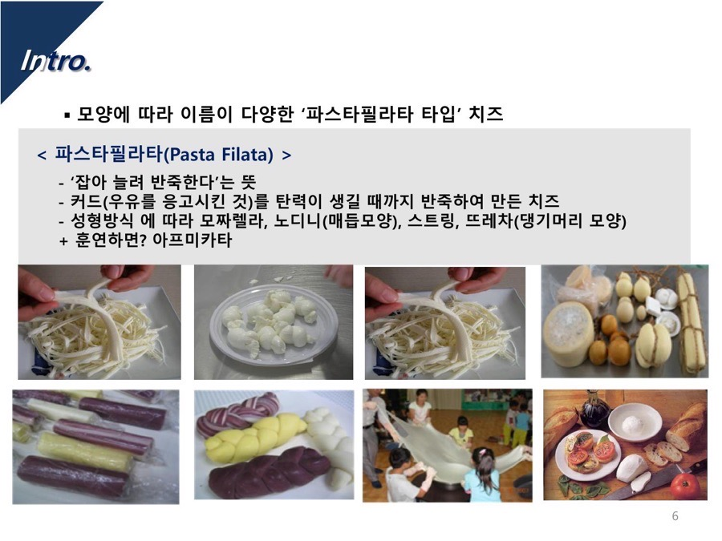
P L A T E 0 1파스타 필라타 계열: 스트링·모짜렐라·노디니·뜨레차·프로볼로네. Jersey A2 우유는 지방구가 커 늘어남이 부드럽고 광택이 좋다.
출처: 국립축산과학원 자연치즈 실습 p.6
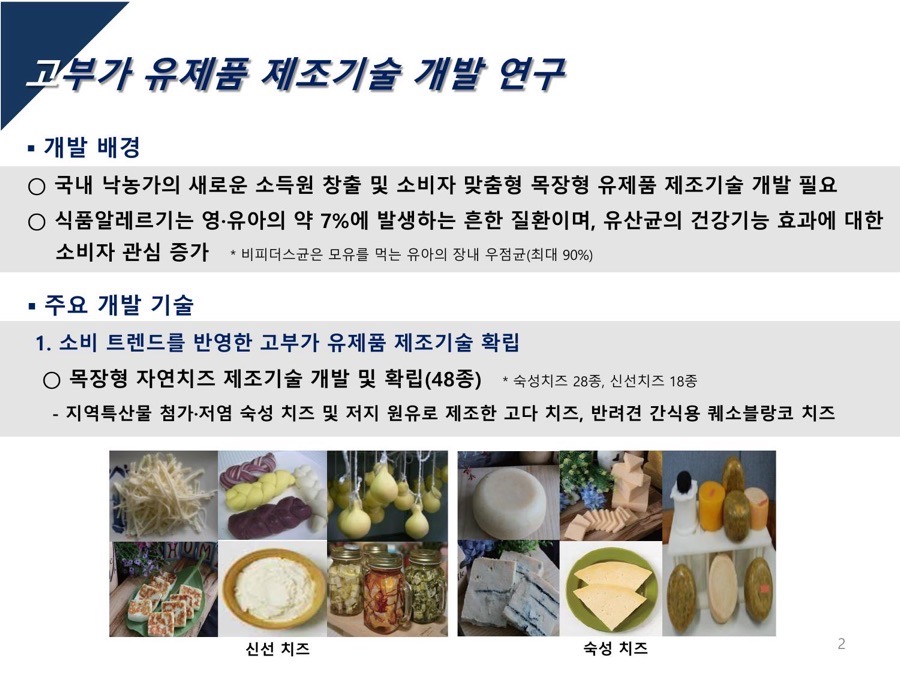
P L A T E 0 2고부가 유제품 개관 — 목장형 자연치즈 48종(숙성 28·신선 18) 개발 확립.
출처: 국립축산과학원 자연치즈 실습 p.2
2. 퀘소 블랑코 · 신선치즈 제조 공정
가장 진입장벽이 낮은 신선치즈. 원유 90~95℃ 가온 → 구연산액 첨가 → 응고 → 유청배출 → 성형. 수율 16~18%.
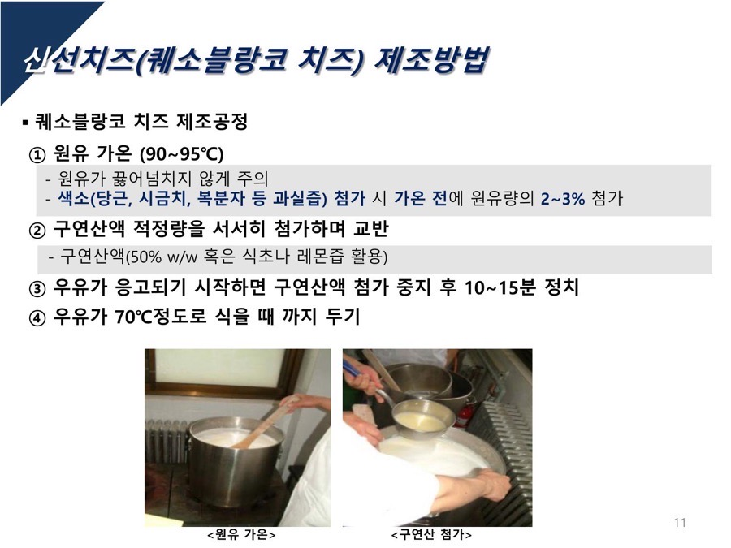
P L A T E 0 3① 원유 가온 (90~95℃, 끓어넘치지 않게 주의) ② 구연산액 서서히 첨가·교반.
출처: 국립축산과학원 자연치즈 실습 p.11
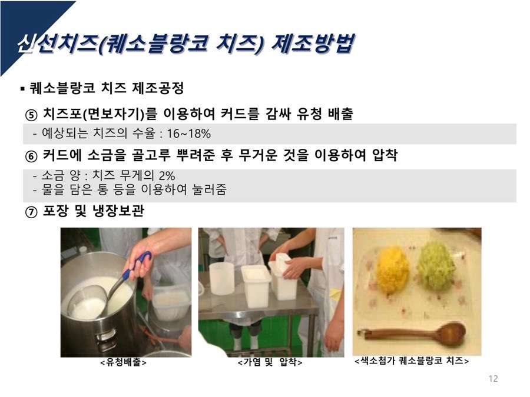
P L A T E 0 4⑤ 치즈포로 유청 배출 → ⑥ 커드 2% 가염·압착 → ⑦ 포장·냉장. 당근·시금치·복분자즙 2~3% 첨가로 색소 표현 가능.
출처: 국립축산과학원 자연치즈 실습 p.12
3. 스트링 치즈 제조 공정 (10단계 전공정)
국립축산과학원 확립 공정. 원유 100kg 기준: 살균(65℃×30분) → 냉각(34℃) → 스타터 3g → 렌넷 23mL → 커드 1×1×1cm 절단 → 43℃ 가온 → pH 5.2 도달 → 75℃ 열수 성형.
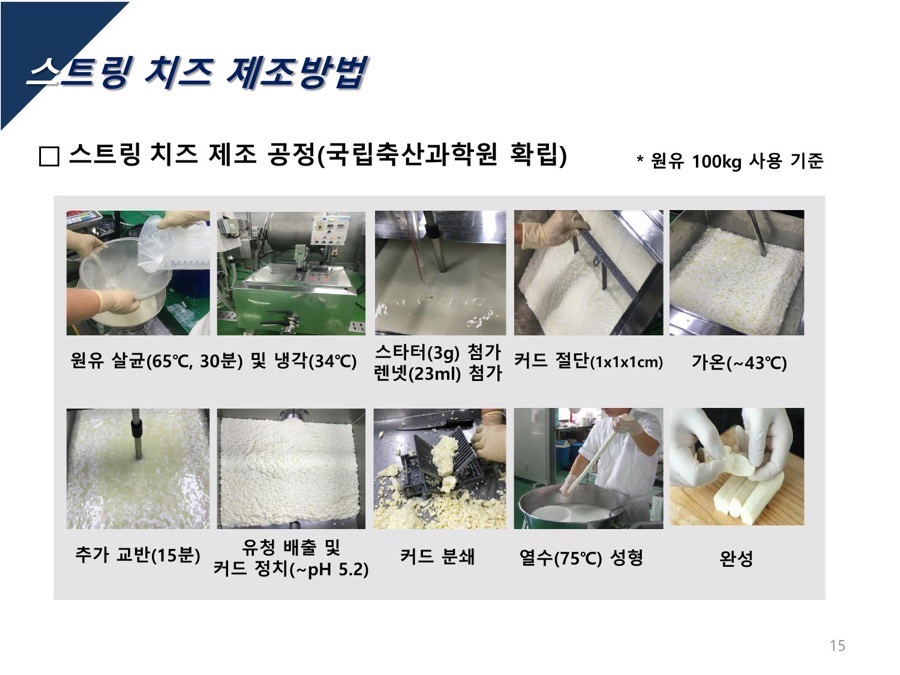
P L A T E 0 5스트링 치즈 제조 공정 (원유 100kg 기준) — 살균·냉각·스타터·렌넷·커드 절단·가온·교반·유청배출·열수 성형·완성.
출처: 국립축산과학원 자연치즈 실습 p.15 (모짜렐라·스트링 공통 공정)
4. 살균·냉각·스타터 (STEP 1~3)
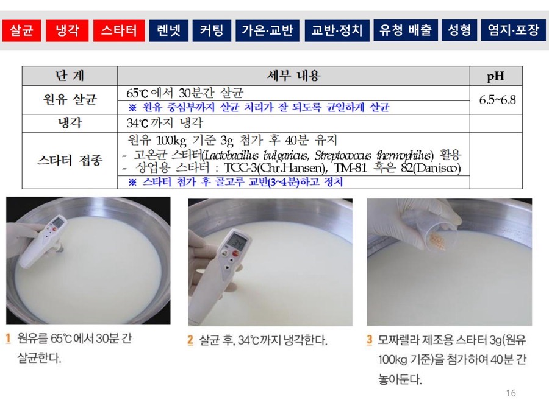
P L A T E 0 6① 원유 65℃×30분 저온살균 (LTLT) ② 34℃까지 냉각 ③ 고온균 스타터 3g/100kg 첨가, 40분 유지.
Lactobacillus bulgaricus +
Streptococcus thermophilus.
출처: 국립축산과학원 자연치즈 실습 p.16
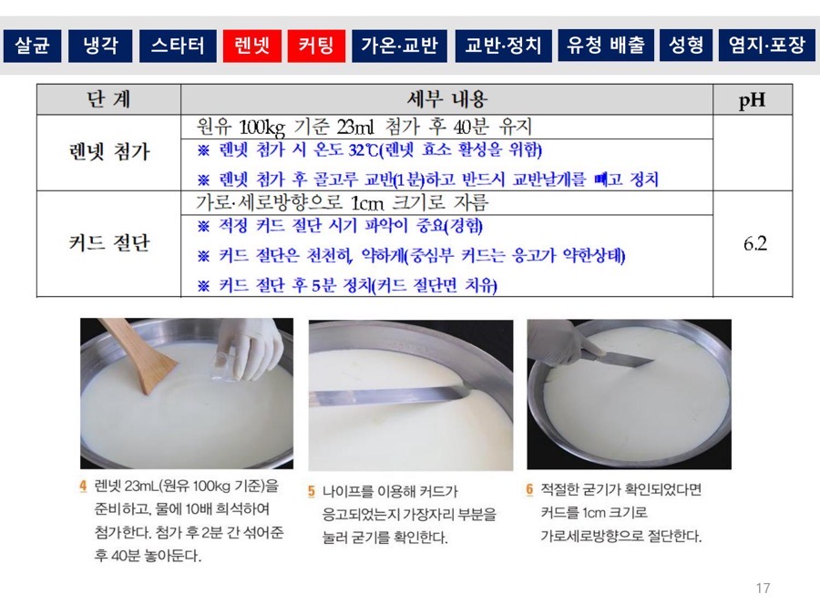
P L A T E 0 7④ 렌넷 23mL(원유 100kg 기준)을 물에 10배 희석 첨가·2분 교반·40분 정치 (32℃) ⑤ 응고 확인 ⑥ 커드 1cm 격자 절단, pH 6.2 기준.
출처: 국립축산과학원 자연치즈 실습 p.17
5. 커드 절단·가온·유청 배출 (STEP 4~7)
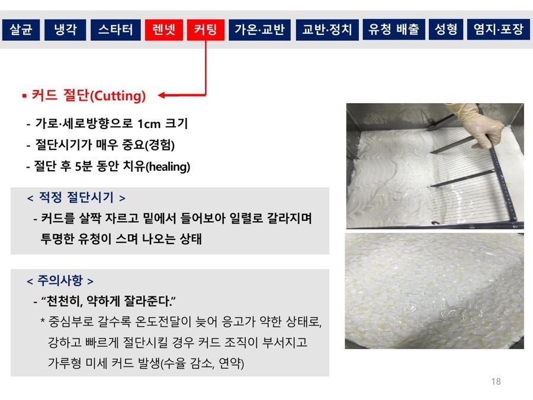
P L A T E 0 8커드 절단(Cutting) — 가로·세로 1cm 격자. "천천히 약하게" 잘라준다 — 강하게 빠르게 절단 시 커드 조직 부서짐 → 수율 감소·연약해짐. 절단 후 5분 치유(healing).
출처: 국립축산과학원 자연치즈 실습 p.18
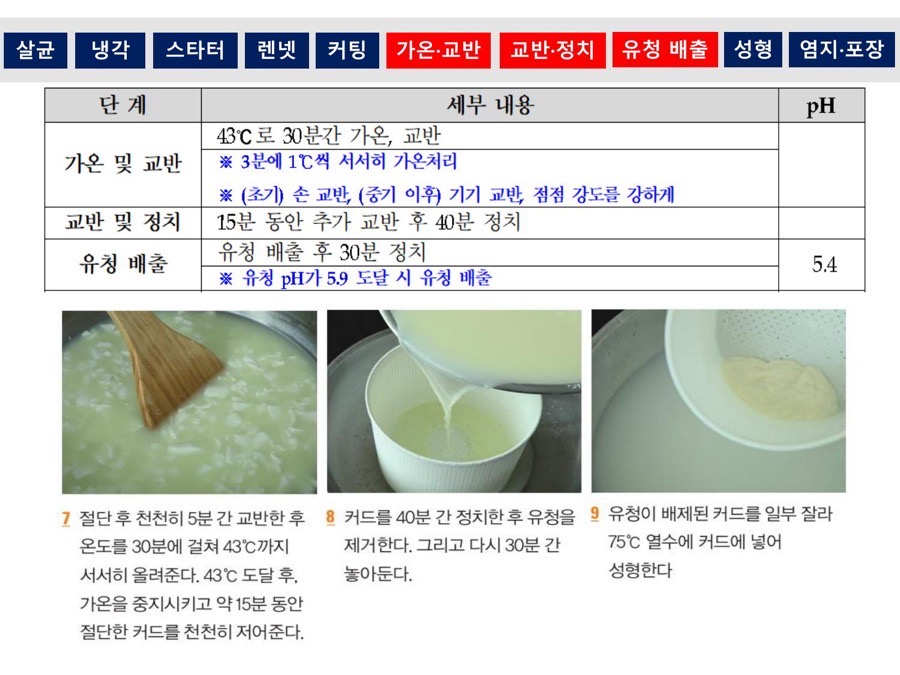
P L A T E 0 9⑦ 43℃까지 30분에 걸쳐 서서히 가온 (1℃당 3분), 15분 추가 교반 ⑧ 40분 정치 후 유청 배출 (pH 5.9 도달 시) ⑨ 75℃ 열수 성형 준비.
출처: 국립축산과학원 자연치즈 실습 p.19
6. 파스타 필라타 성형·염지 (STEP 8~10)
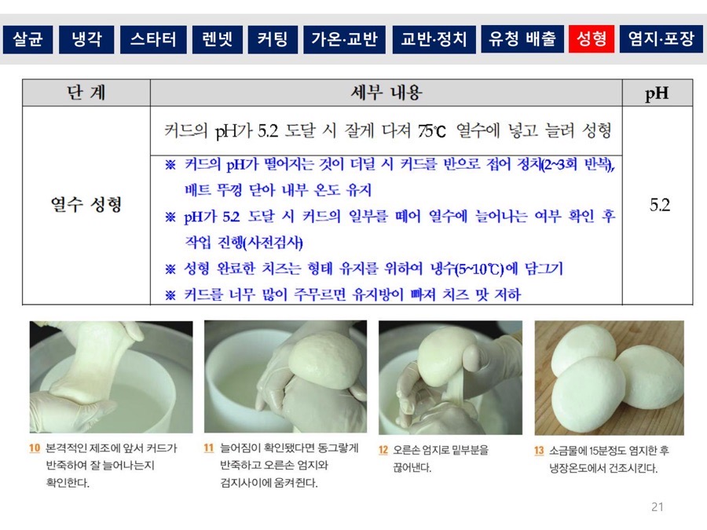
P L A T E 1 0모짜렐라 열수 성형 — ⑩ 늘어남 확인 ⑪ 동그랗게 반죽·엄지검지 사이로 뽑아냄 ⑫ 오른손 엄지로 밑부분 끊어냄 ⑬ 소금물 15분 염지·냉장 건조. pH 5.2 도달 시 75℃ 열수 성형 개시.
출처: 국립축산과학원 자연치즈 실습 p.21
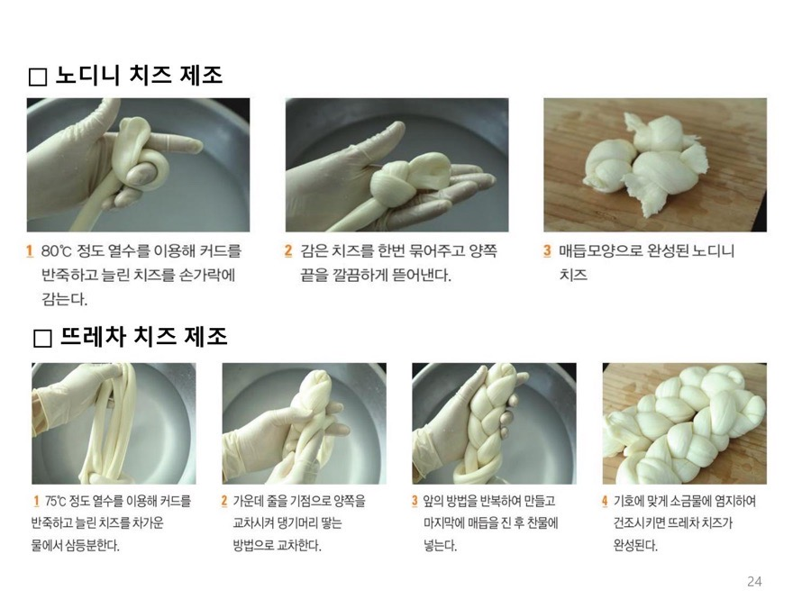
P L A T E 1 1노디니(매듭)·트레차(댕기머리) 성형 응용 — 80℃ 열수로 커드 반죽 → 손가락에 감아 매듭 짓거나 삼등분해 교차 꼬아 만든다. 기호에 따라 소금물 염지.
출처: 국립축산과학원 자연치즈 실습 p.24
7. 유가공 장비 실물 · Equipment
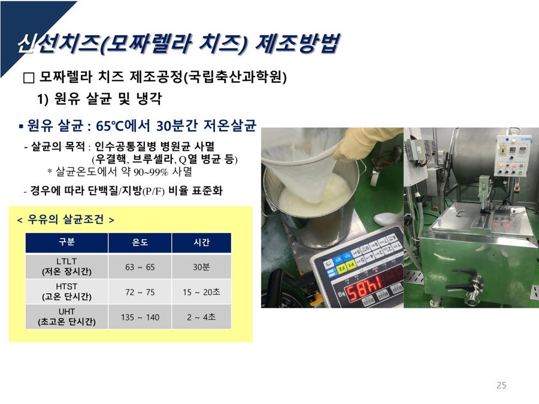
P L A T E 1 2배치 저온살균기 — 이중자켓·디지털 온도조절·교반기 일체형. LTLT 63~65℃×30분 / HTST 72~75℃×15~20초 / UHT 135~140℃×2~4초 모드 지원.
출처: 국립축산과학원 발효버터 실습 p.25
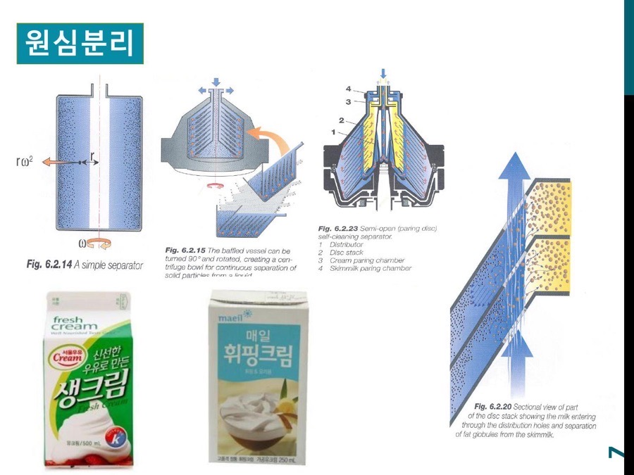
P L A T E 1 3원심 크림 분리기 (Disc-stack Centrifugal Separator) — 유지방구 농축, 탈지유·크림 분리. Pearson's Square 공식으로 유지방 18~50% 표준화.
출처: 국립축산과학원 발효버터 실습 p.7
C H A P T E R 1 1
원본 참고자료 다운로드
제조 공정 원본 PDF 자료 (국립축산과학원·개별 교육자료).
참고자료 · References
국립축산과학원 축산물이용과 — 「자연치즈 제조 이론 및 실습」 (KACC 91563 비피더스균 활용 기술 포함). 국내 낙농가 목장형 자연치즈 48종(숙성 28·신선 18) 개발 연구 기반.
유자연 연구관 (국립축산과학원, 2019) — 「발효버터 제조 실습」. 유크림 규격기준, 원심분리, Pearson's Square 지방표준화.
스타터 유산균 자료 — Chr. Hansen (TCC-3, TA61), Danisco (TM-81/82). 고온균 Lactobacillus bulgaricus + Streptococcus thermophilus, 원유 100kg당 3g / 50~40분 접종 기준.
제조공정 정본 (본 레시피북 기반) — 까망베르·고다 숙성치즈, 스트링·모짜렐라 파스타 필라타, 할루미 염지, 발효유. 무무목장 A2 저지 목초우유 실무 조정 완료.